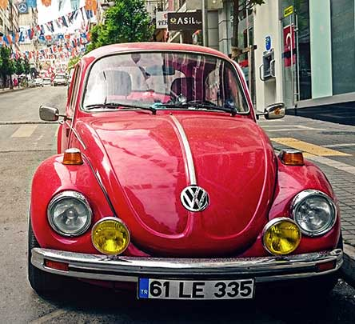
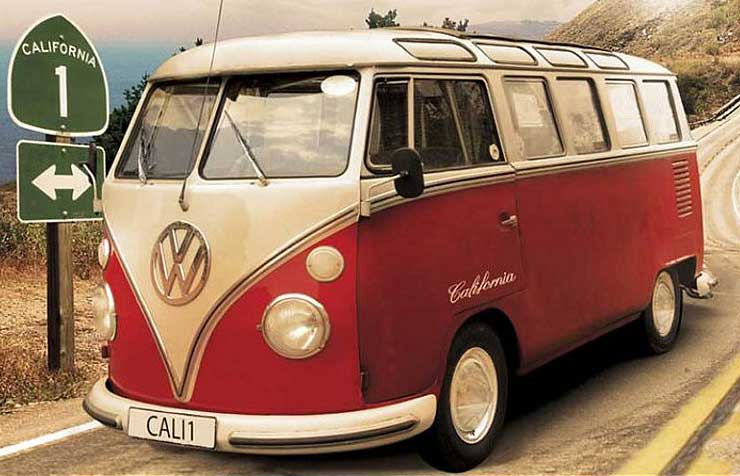
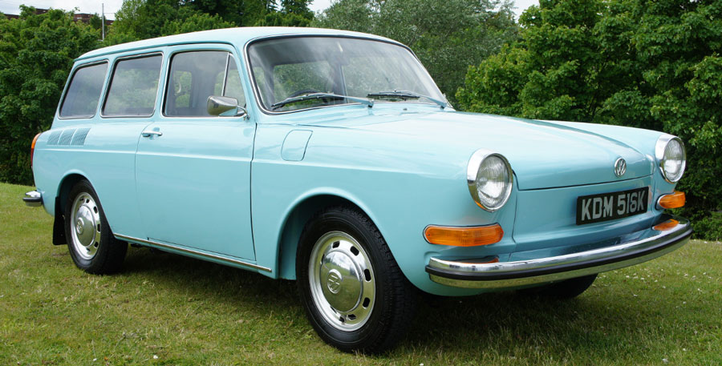
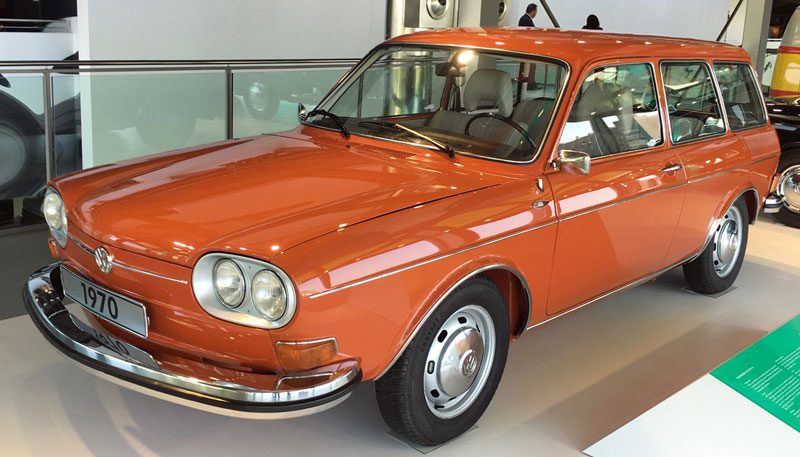

The Volkswagen Beetle – officially the Volkswagen Type 1, informally in Germany the Käfer (German, "beetle") and in parts of the English-speaking world the Bug – is a two-door, five-passenger, rear-engine economy car that was manufactured and marketed by German automaker Volkswagen (VW) from 1938 until 2003. The need for a people's car ("Volkswagen" in German), its concept and its functional objectives, was formulated by the leader of Nazi Germany, Adolf Hitler, who wanted a cheap, simple car to be mass-produced for his country's new road network.
BUS

The Volkswagen Type 2, known officially (depending on body type) as the Transporter, Kombi or Microbus, or, informally, as the Bus (US) or Camper (UK), is a forward control panel van introduced in 1950 by the German automaker Volkswagen as its second car model. Following – and initially deriving from Volkswagen's first model, the Type 1 (Beetle) – it was given the factory designation Type 2. Like the Beetle, the van has received numerous nicknames worldwide, including the "microbus", "minibus", and, because of its popularity during the counterculture movement of the 1960s, Hippie van/wagon, and still remains iconic for many hippies today.
TYPE 3

The Volkswagen Type 3 was a compact car (C-segment in Europe) manufactured and marketed by Volkswagen from 1961 to 1973. Introduced at the 1961 Frankfurt Motor Show, Internationale Automobil-Ausstellung (IAA), the Type 3 was marketed as the Volkswagen 1500 and later the Volkswagen 1600, in three body styles: two-door Notchback, Fastback and Squareback, the latter marketed as the 'Variant' in most markets, and 'Squareback' in the United States.
TYPE 4

The Volkswagen Type 4 is a mid-sized car manufactured and marketed by Volkswagen of Germany from 1968 to 1974 in two-door and four-door sedan as well as two-door station wagon body styles. The Type 4 evolved through two generations, the 411 (1968–72) and 412 series (1972–74).
Designed under the direction of Heinrich Nordhoff and introduced at the Paris Motor Show in October 1968. In the United States, VW sold 117,110 Type 4s from 1971 to July 1974. As Volkswagen's last air-cooled sedans and wagons, the Type 4 models were succeeded by the first generation Passat, marketed as the Dasher in the USA.